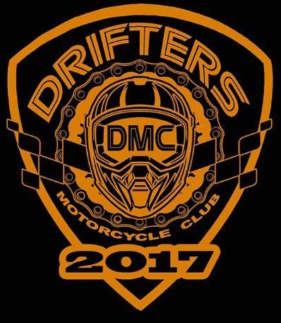

.

Who are we??
We are a Visayas Based Motorcycle club specifically Iloilo Based. We are a group of motorcycle enthusiasts who enjoy frequent group rides, fun activities, community and charity support, and camaraderie among friends and family within our club. Our motorcycle club is open to male and female riders, riders of every ethnicity, riders of all brands and styles of motorcycles, and people from many different walks of life and life experiences of all age groups. We are a prospecting club and we take great pride in how we organize and maintain a high level of safety standards for our members and guests of our rides.
Drifters Motorcycle Club of Iloilo is a VERY active group. We typically plan at least 1-2 rides every month and for the past year . Many of our rides have included charity runs, rides to destinations throughout southern Iloilo, Northern Iloilo, Negros, Capiz, Aklan, Antique and Guimaras, as well as local and regional motorcycle rallies. we do several rides for our Remote areas, Typhoon Victims and etc. Our club always welcomes outside riders to join us so to see our full ride schedule and join us for a ride,CLICK HERE for more information.